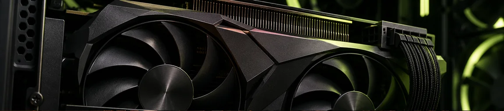

Gaming-PC bis 1.000 Euro: Welche Aufpreise lohnen sich?
Ein teurerer PC kann eine schnellere Grafikkarte mitbringen oder einfach eine größere SSD. Ob sich der Aufpreis lohnt, hängt davon ab, welchen Unterschied du in deinen Spielen oder im Alltag merkst.

Wofür zahlst du beim teureren PC mehr?
Wenn sich zwei PCs beim Preis unterscheiden, schau zuerst, was du für den Aufpreis bekommst. Eine schnellere Grafikkarte kann dir höhere Details oder mehr FPS ermöglichen. Ein anderes Gehäuse oder RGB-Beleuchtung können dir optisch besser gefallen. Gerade bei einem Budget bis 1.000 Euro lohnt es sich, diese Dinge für dich zu gewichten.
Zum Mitvergleichen kannst du zwei Rechner aus unserer Auswahl an Gaming-PCs bis 1.000 Euro öffnen. Geh dann die Teile durch, bei denen sich die Angebote unterscheiden.
Die Grafikkarte ist oft der wichtigste Unterschied
Wenn du mehr fürs flüssige Spielen ausgeben möchtest, fang bei der Grafikkarte an. Such nach Tests in deinen wichtigsten Spielen und schau, wie groß der Unterschied bei derselben Auflösung und denselben Einstellungen ist.
Notier dafür den vollen Namen der Karte und wie viel Grafikspeicher sie hat. „Gaming-Grafik“ hilft dir bei der Suche kaum. Genauso wenig sagt dir die Speichergröße allein, wie schnell die Karte ist. Zwei Modelle mit gleich viel Speicher können in einem Spiel unterschiedlich schnell sein.
Beim Prozessor lohnt sich derselbe genaue Blick. Ein älterer Ryzen 7 kann beim Spielen hinter einem neueren Ryzen 5 liegen. Such deshalb nach der vollständigen Modellnummer, wenn du Tests zu beiden CPUs vergleichst.
Wenn ein Test DLSS, FSR oder Frame Generation nutzt, schau auch nach den Werten ohne diese Funktionen. So kannst du die Leistung beider Karten unter ähnlichen Bedingungen einschätzen. Was die Funktionen bewirken, erklären wir in Nvidia oder AMD?
Mehr Speicher: Welchen Unterschied würdest du merken?
Eine größere SSD lohnt sich, wenn du viele Spiele installiert lassen willst. Spielst du ohnehin immer dieselben paar Titel und passen sie auf das günstigere Laufwerk, kannst du dir den Aufpreis fürs Erste sparen.
Der RAM hält Daten für laufende Spiele und Programme bereit. Mehr davon kann dir helfen, wenn du etwa mit vielen Mods spielst und nebenbei noch eine Aufnahme laufen hast. Solange der vorhandene RAM reicht, merkst du von zusätzlicher Kapazität beim Spielen meist wenig.
| Der teurere PC bietet … | Das ist für dich interessant, wenn … |
|---|---|
| Eine größere SSD | du mehrere große Spiele installiert lassen möchtest. |
| Mehr Arbeitsspeicher | deine Spiele oder gleichzeitig geöffneten Programme mehr RAM brauchen. |
| WLAN und Bluetooth | du diese Verbindungen nutzen möchtest und noch keine Lösung hast. |
| Ein anderes Gehäuse | Platz, Anschlüsse, Kühlung oder Optik für dich einen konkreten Vorteil bieten. |
Wenn am Schreibtisch kein Netzwerkkabel liegt, gehört WLAN für dich vielleicht zur Grundausstattung. Liegt schon ein Kabel bereit, kann derselbe Aufpreis für dich überflüssig sein.
Schau auch auf Netzteil und Kühlung
Oft stehen Grafikkarte und CPU groß in der Produktbeschreibung, während Netzteil und Kühler nur am Rand auftauchen. Schau trotzdem nach ihren Modellnamen. Wenn beim Netzteil lediglich eine Wattzahl steht, frag beim Händler nach. Erst mit dem Modell kannst du es gezielt vergleichen.
Wenn dir ein leiser PC wichtig ist, helfen Tests mit Lautstärkemessungen unter Last. So siehst du, wie sich das Gehäuse und die Kühlung im Spiel schlagen, wenn die Lüfter mehr arbeiten müssen.
Ein neueres Mainboard kann beim späteren Aufrüsten Vorteile haben. Überleg dir, welches Upgrade für dich infrage kommt, und prüf dann, welche Steckplätze oder Prozessoren das Board unterstützt. So kannst du einschätzen, ob dir die zusätzlichen Möglichkeiten den Aufpreis wert sind.
Vergleiche den Preis, den du wirklich bezahlen würdest
Vergleich die Preise erst, wenn bei beiden PCs alles drin ist, was du brauchst. Falls Windows, WLAN oder eine größere SSD fehlen, rechne die Extras beim jeweiligen Angebot dazu.
Angenommen, zwischen zwei PCs liegen auf den Produktseiten 130 Euro. Wenn beim teureren Modell Windows und WLAN dabei sind und du beides beim günstigeren nachkaufen müsstest, schrumpft der Abstand im Warenkorb. Unterscheiden sich die PCs vor allem bei der Beleuchtung, kannst du nach Geschmack entscheiden.
Wenn der günstigere Rechner deine Spiele packt und die nötige Ausstattung mitbringt, kannst du den Rest des Budgets behalten. Nach demselben Prinzip kannst du auch unsere Angebote von 1.000 bis 1.500 Euro miteinander vergleichen.